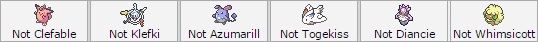

How Do I Start a Challenge?
Before we begin, one thing must be emphasized: We have a very strict anti-multileaguing policy!
Multileaguing is the act of being in more than one League at any given period of time. If you are already in another league and wish to join
Sora, you have to pick one of the two. You are also not to join any other league as long as you're a member of the Sora League. This does not
count for applicants who were past members of other leagues, and is currently no longer a member.
If you multileague, you will be found out, and you will be kicked out of Sora.
Sora is a community before it is a league.
We retain the right to revoke or outright refuse granting membership to users we deem toxic.
Though hopefully this won't happen much, it is a right we readily will evoke when necessary.
Don't worry, though, it takes a lot to tick us off. Most of the time.
First of all, you need a type before you become a Gym Leader or Trainer. You can check the Gym Leaders page to see which type is free, or
apply to become a Gym Trainer on an occupied type instead. The latter is not generally recommended, however.
Once you picked a type, PM a member of the A-Team, and express your interest in joining. They will then test you for your specified type,
which may range from two to three different type weakness tests. A-Team members have their name highlighted in the server's namelist, as
shown below. Make sure you already have a team! Do note that only A-Team members can test others, unless otherwise specified by one.

During these tests, applicants are not allowed to change their teams in any manner, shape, and/or form. Winning is not necessary to secure a
position (after all, they're all weakness tests), and instead your goal is to impress the person testing you.

If you pass the tests, you can then proceed to get a Gym Leader alt of your choice, which hopefully wouldn't have been taken yet. The correct
format for this is ∆Sora [name]∆. Someone will then promote you to the appropriate rank. You can also do /symbols after you are
promoted, and you'll automatically get the symbols added into your name.
If a member was kicked, or left the league three times, they aren't allowed to rejoin.
Very rarely, special circumstances may be accepted after a discussion between the members of the A-Team.
Gym Leaders are allowed to change types.
They need to pass another test for their new type, and if the spot they're after has another leader occupying it,
the leader may be challenged to a Best of Three. The winner gets the position competed for.
There are monthly tournaments for Gym Leaders aspiring to be Elite 4 or Frontier members.
These tournaments are held on the 1st to 7th (E4 Tour) and 8th to 14th (Frontier Tour), respectively. Championing any of these
tours will allow Gym Leaders to challenge a person holding their respective position. Every last week of any given month,
the Elite Frontier Tournament is held. All Frontiers can participate in this, and the champion is allowed to challenge
an Elite Frontier for their position.
At the 1st to 7th of every month, the Elite 4 Promotional Tours are held. This is a Round Robin tournament, held with
every single Gym Leader and member of the Elite 4 (referred to as "participants" from this point onwards). The four participants
with the largest number of wins then proceed to be the Elite 4 for that month. In the case of a tie between two or more members,
the participant with the lower amount of losses wins. In the case of an absolute tie (same wins, same losses), a Best of 3 set
is played between the two participants. Participants must register their entire team to an A-Team member for use throughout the
entire tournament; this is to discourage targetted counterteaming. Registering teams can be done by the 25th of the month following,
and should be submitted to a member of the Admin Team as soon as possible. Participants may still use a different team to battle
against challengers, and are allowed to register a new team for next month's tournament.
At the 8th to 14th of every month, the Frontier Promotional Tours are held. Participation in this tournament is completely optional,
and every Gym Leader of a month or longer is eligible for entry (entrants are referred to as "participants" from this point onwards).
The Promotional Tour is a Round Robin tournament between all eligible applicants, with the participant of the highest amount of wins
gains the right to challenge a pre-existing Frontier member for their position. In the case of a tie between two or more members,
the participant with the lower amount of losses wins. A modified Best of Three set is played between the tournament's victor and the
challenged Frontier member, with one game being in the participant's tier or format, the second being in the Frontier's, and should
there be a need for a third game, it will use a format pre-determined by the Frontier Head in charge. Should there be an empty position,
the participant instead is tested by the Frontier Head. Every participant needs to be ready with a tier or format of their choosing,
as well as a team built for said tier or format, prior to the tournament itself.